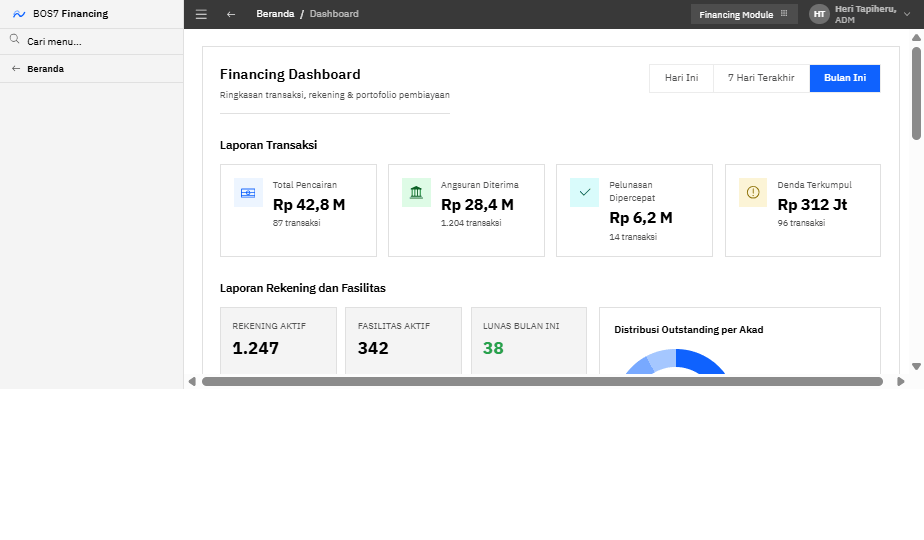
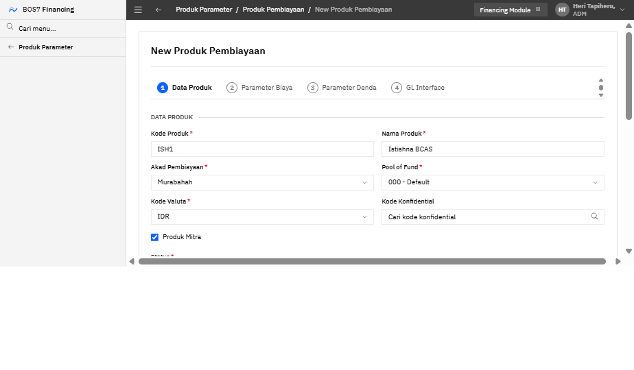
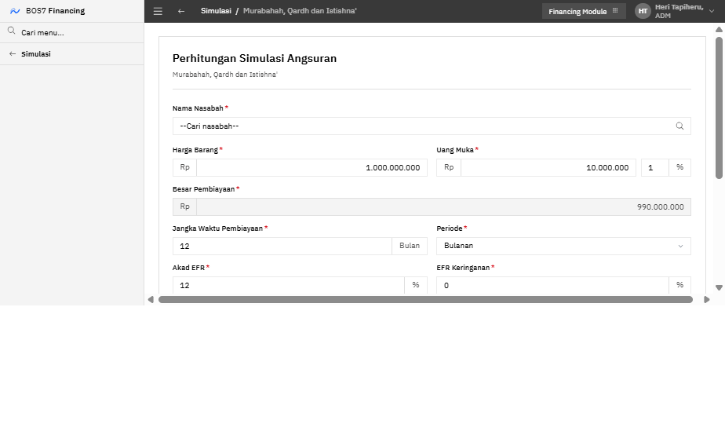
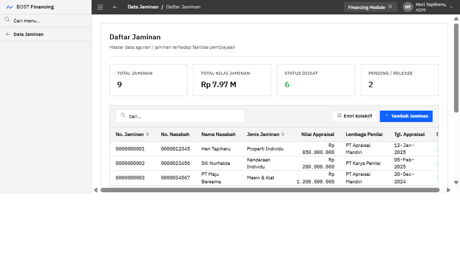
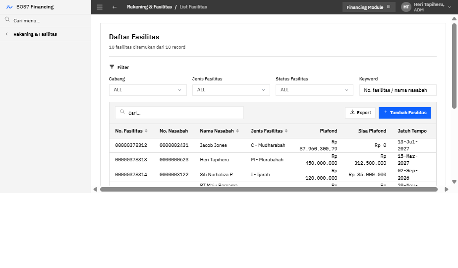
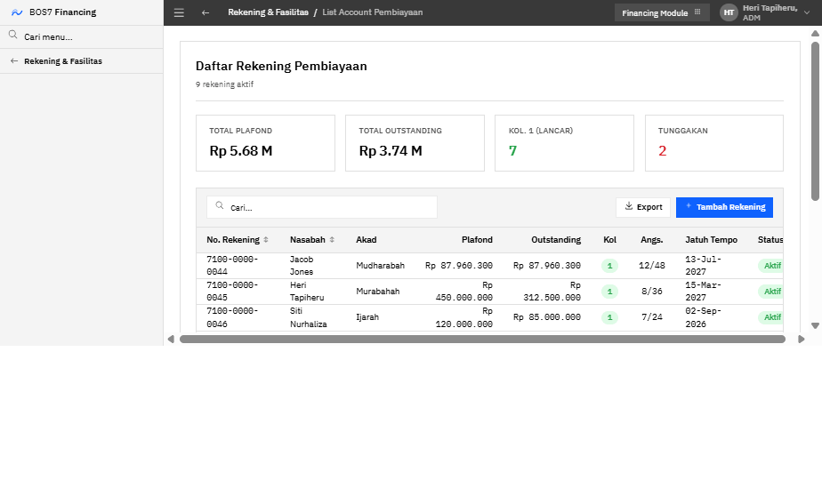
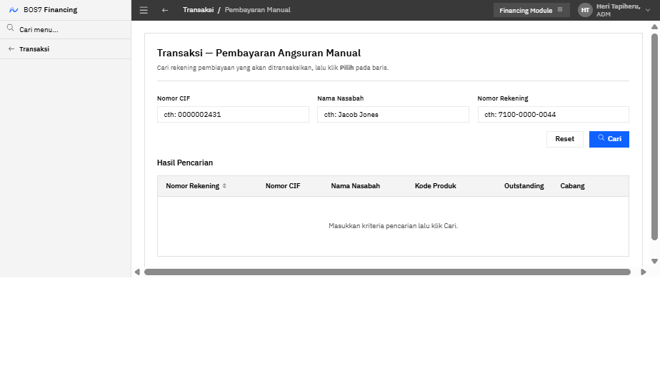
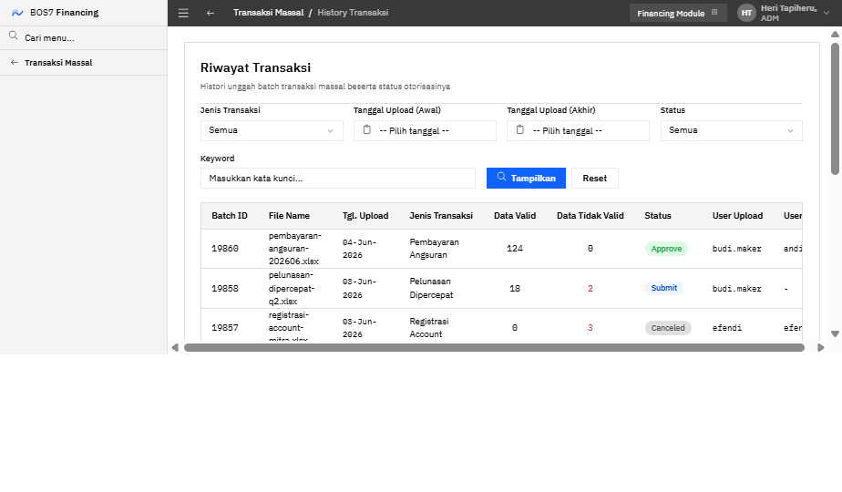
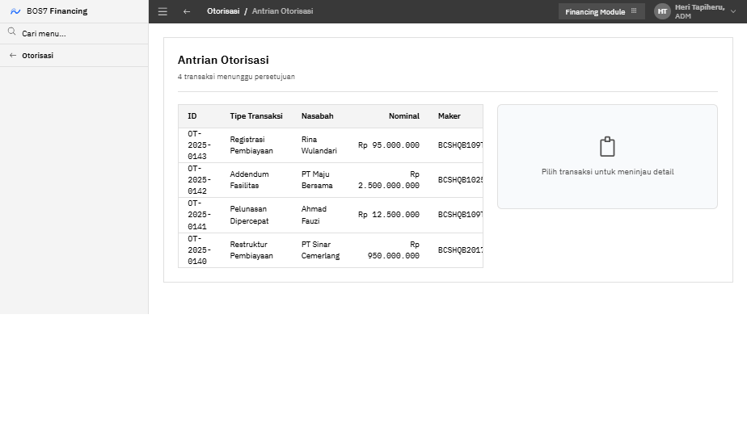

Platform back-office pembiayaan syariah end-to-end — dari originasi, servicing, hingga recovery — dalam satu sistem terpadu dengan kontrol maker-checker dan integrasi General Ledger.
Apa itu Module Financing dan masalah yang diselesaikan
Transaksi Massal, Data Master, Pelaporan
9 grup fungsi, 73 menu, peta alur operasional
Murabahah, Ijarah, MMQ, Mudharabah, Gadai, dll.
Pemantauan portofolio dan standar antarmuka BOS7
Maker-checker, otorisasi berjenjang, audit
Setup → Originasi → Servicing → Recovery
Nilai utama dan rencana implementasi
Module Financing BOS7 menangani pembiayaan syariah secara menyeluruh — mulai dari simulasi angsuran calon nasabah, pembukaan fasilitas & rekening, pelayanan transaksi harian, hingga penanganan kredit bermasalah.
Operasional pembiayaan kerap tersebar di banyak aplikasi dan spreadsheet. Module Financing menyatukannya — mengurangi rekonsiliasi manual, mempercepat layanan, dan menutup celah kontrol.
Simulasi → registrasi fasilitas → rekening dalam satu alur berurutan, tanpa input ulang data nasabah.
Validasi sistemik, GL Interface otomatis, dan otorisasi berjenjang meminimalkan salah posting.
Dashboard real-time untuk outstanding, kolektibilitas, dan rasio NPF lintas cabang & akad.
Alur hapus buku, recovery, hingga hapus tagih terdokumentasi dan dapat diaudit.
Unggah batch transaksi (angsuran, pelunasan, registrasi) dengan validasi & otorisasi terpusat.
Parameter akad, denda ta'zir/ta'widh, dan pencadangan (CKPN/PPAP) sesuai ketentuan.
Seluruh fungsi tersusun dalam SideNav berjenjang ala BOS7 — pengguna menelusuri grup → menu → sub-menu tanpa berpindah aplikasi.
Dari penyiapan produk hingga penyelesaian kredit macet — setiap tahap memiliki layar khusus dan titik otorisasi.
Seluruh layar mengikuti BOS7 Design System berbasis Carbon: chrome gelap 40px, SideNav drilldown terang, permukaan datar tanpa gradien, dan tipografi IBM Plex.
Ihsan · BCA · BJB · Mega · Pos — satu basis kode, lima identitas.
IBM Plex Sans · Plex Mono — Rp 1.875.000.000

Ringkasan transaksi, rekening & portofolio pembiayaan dengan filter periode dan distribusi per akad, cabang, dan kolektibilitas.
Menelusuri perjalanan lengkap sebuah pembiayaan melalui sistem — setiap skenario menggabungkan beberapa modul menjadi alur kerja nyata yang dijalankan operator bank.
Sebelum operasional dimulai, admin menyiapkan referensi master dan mendefinisikan produk pembiayaan beserta parameternya.
Wizard 4 bagian: Data Produk · Parameter Biaya · Parameter Denda · GL Interface, dengan indikator langkah.
Mapping setiap kode_tx_class ke rekening GL — acuan posting jurnal otomatis tiap transaksi.
Kode konfidensial, COA, & produk dipilih lewat modal lookup — bukan ketik bebas, mengurangi salah input.

Operator mendefinisikan kode & nama produk, akad, pool of fund, hingga skema pencadangan — lalu lanjut ke biaya, denda, dan pemetaan GL.
Calon nasabah mensimulasikan angsuran; officer membuka fasilitas, lalu membuka rekening pembiayaan terhadap fasilitas tersebut — diakhiri otorisasi.
Hasil simulasi & data nasabah terbawa ke registrasi tanpa input ulang.
Sistem menjaga rekening tetap dalam batas parameter produk & fasilitas.
Setiap registrasi masuk antrian otorisasi sebelum aktif.

Satu layar untuk menghitung skema angsuran berbagai akad — operator memilih nasabah, memasukkan harga barang, uang muka, tenor, dan EFR.
Catat agunan terhadap fasilitas — daftar inventaris, koreksi nilai appraisal, hingga pelepasan (release) saat pembiayaan lunas.


Officer mencari fasilitas existing dengan filter cabang/jenis/status, melihat detail (biaya & transaksi), lalu melakukan addendum perubahan akad/plafond/tenor.
Dari daftar rekening pembiayaan, operator melengkapi data, lalu merestruktur ketika nasabah mengalami kesulitan bayar — jadwal ulang & relaksasi.


Teller menerima setoran angsuran manual; atau nasabah meminta pelunasan dipercepat dengan perhitungan muqasah (potongan margin).
Alur terstruktur untuk NPF — keluarkan dari neraca, kelola penagihan, hingga hapus tagih bila tidak tertagih. Setiap langkah terdokumentasi.
Agunan Yang Diambil Alih: input, penyelesaian, pencairan, hingga happes dalam satu sub-grup.
Hapus buku & recovery memicu posting CKPN/PPAP & pendapatan sesuai tx_class.
Riwayat keputusan recovery siap untuk pemeriksaan internal & regulator.
Di balik tujuh alur utama, sederet kapabilitas membuat operasi berjalan efisien dan patuh — transaksi massal, data master, pelaporan, dan kontrol keamanan.

Unggah batch transaksi via berkas — angsuran, pelunasan, registrasi — dengan validasi baris, ringkasan data valid/tidak valid, dan otorisasi terpusat.
Delapan menu master dengan pola CRUD seragam — daftar berfilter, popup aksi (view/update/hapus), dan form dengan lookup tervalidasi.
Notaris, Asuransi, Appraisal — filter jenis & keyword.
Porsi modal, eqv. rate, GL titipan margin/pokok.
Kementerian, korporasi, & PIC terkait.
Pengembang properti rekanan KPR.
Pejabat penandatangan akad & persetujuan.
Segmentasi sektor ekonomi pembiayaan.
Klasifikasi objek pembiayaan & agunan.
Katalog biaya yang dapat dibebankan.
Sembilan jenis laporan operasional & pengawasan, ditambah satu antrian otorisasi terpusat untuk seluruh transaksi material.
Pembiayaan & fasilitas
Per rekening
Biaya & pendapatan
Ledger Balance Verification

Parameter produk, simulasi, dan posting GL menyesuaikan karakteristik tiap akad — jual beli, sewa, bagi hasil, hingga gadai.
Pemisahan tugas antara pembuat (maker) dan pemeriksa (checker) memastikan tidak ada transaksi material yang aktif tanpa persetujuan.
Maker tak dapat menyetujui transaksinya sendiri — kontrol anti-fraud bawaan.
Auto-otorisasi di bawah limit, eskalasi berjenjang di atasnya.
Setiap aksi tercatat — siap untuk pemeriksaan internal & regulator.
Originasi, servicing, hingga recovery tanpa berpindah aplikasi atau input ulang.
Maker-checker, GL Interface otomatis, dan parameter syariah sesuai ketentuan.
Satu basis kode melayani beragam akad dan beberapa identitas bank syariah.
UI densitas tinggi, transaksi massal, dan lookup tervalidasi mempercepat kerja.
Dashboard real-time untuk outstanding, kolektibilitas, dan NPF.
Terima kasih. Kami siap mendemonstrasikan setiap alur secara langsung dan membahas penyesuaian untuk kebutuhan bank Anda.